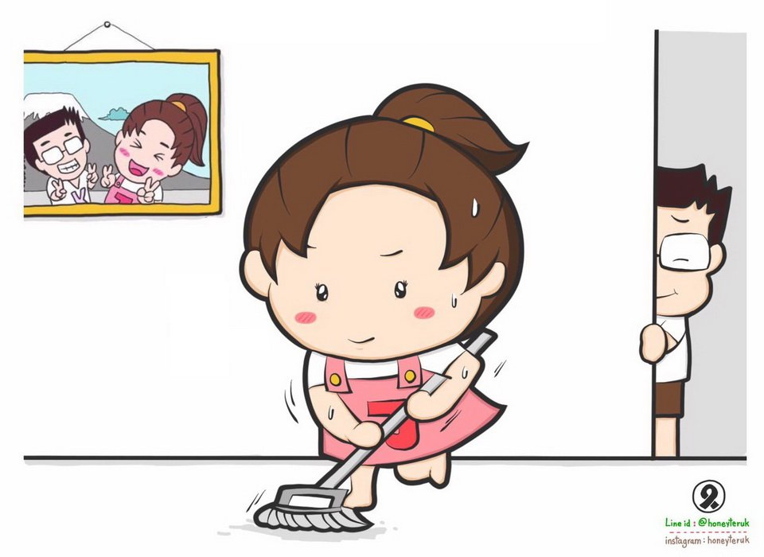
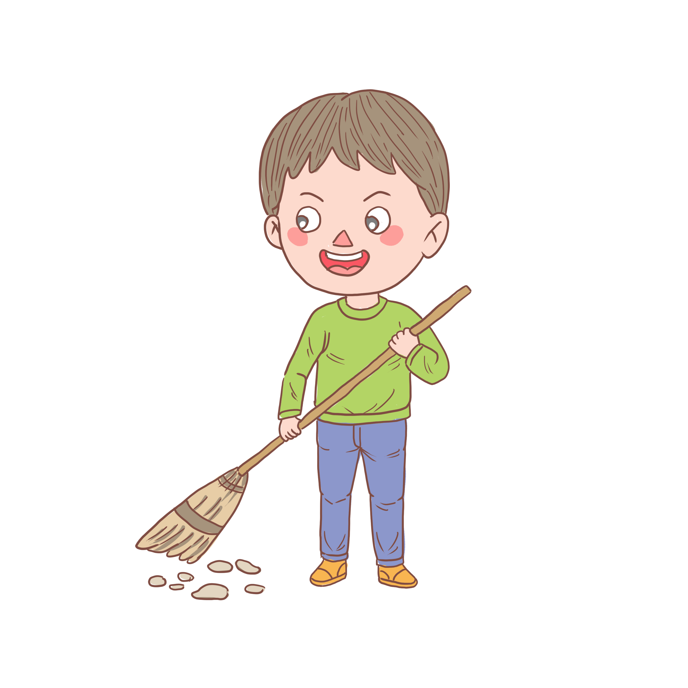

ความเชื่อเกี่ยวกับบุคคล
กวาดเรือน
ตามปรกติคนล้านนาจะกวาดเรือนตอนเช้าหรือตอนกลางวัน
ถ้าไม่จำเป็นจะไม่กวาดเรือนเวลากลางคืน เพราะถือว่า การกวาดเรือนในตอนกลางคืน
เป็นการกวาดเอาข้าวของเงินทองออกจากเรือนไป ความจริงคงเป็นเพราะว่าใน
เวลากลางคืนมีแสงสว่างไม่เพียงพอ มองไม่เห็นข้าวของเครื่องใช้ที่มีขนาดเล็ก
อาทิ เข็มเย็บผ้า เป็นต้น อาจทำให้ข้าวของเครื่องใช้เหล่านั้นสูญหายได้
กินบกจกลง
คนล้านนาจะกินข้าวเหนียวเป็นหลัก โดยจะบรรจุข้าวเหนียวไว้ใน
ไหข้าวที่ใช้นึ่งข้าว เวลากินข้าว ผู้เฒ่าผู้แก่จะสอนลูกหลานให้คดข้าวจากด้านบนก่อน
ห้ามคดลงไปข้างล่างเจาะเอาเฉพาะข้าวที่อยู่ตรงกลางไห ในลักษณะที่เรียกว่า
“กินบกจกลง” เชื่อว่า ถ้าบ้านใดกระทำเช่นนั้น จะทำให้ข้าวในยุ้งบกบางหรือ
ลดลงอย่างรวดเร็ว หรือมิฉะนั้นก็ทำให้ข้าวของเงินทองพร่องลงไปมาก
จนหมดสิ้นไปในที่สุด
เมื่อมีคนที่เจ้าของเรือนไม่ชอบมานั่งพูดคุยด้วย
ไม่อยากให้แขกรายนั้นมาอีก เมื่อเขากลับไปแล้วให้รีบเอาไม้กวาดๆ ไล่ พร้อมพูดเบาๆ ว่า “ไป ไป” เชื่อว่า
บุคคลนั้นจะไม่มาเรือนนั้นอีก
